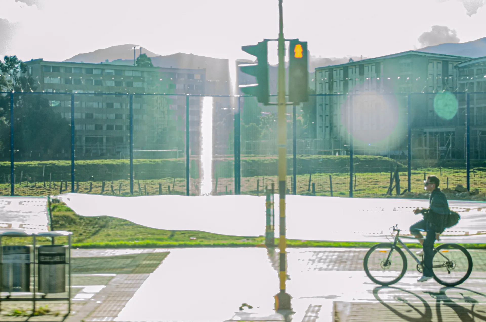
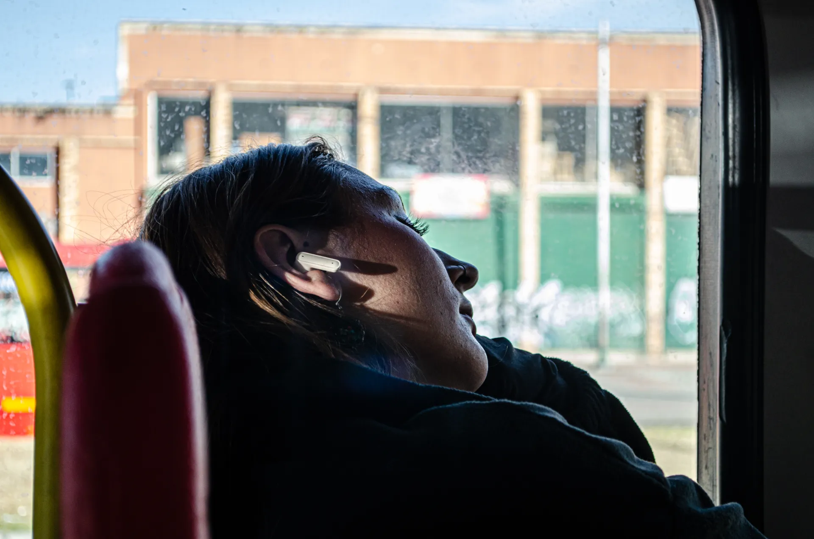
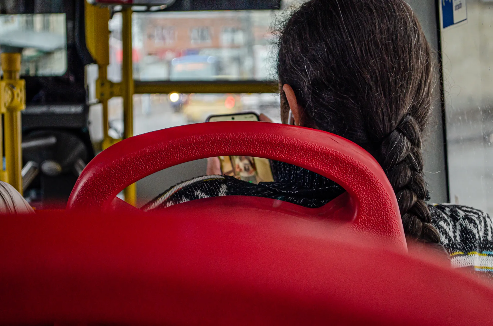
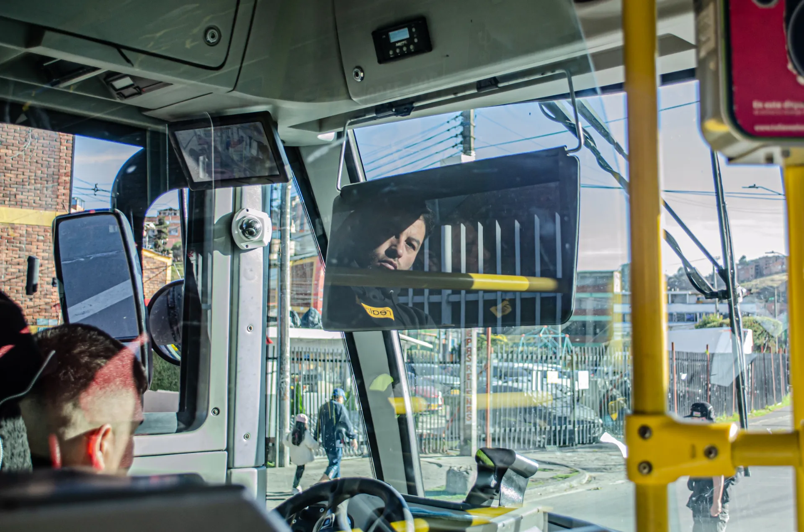
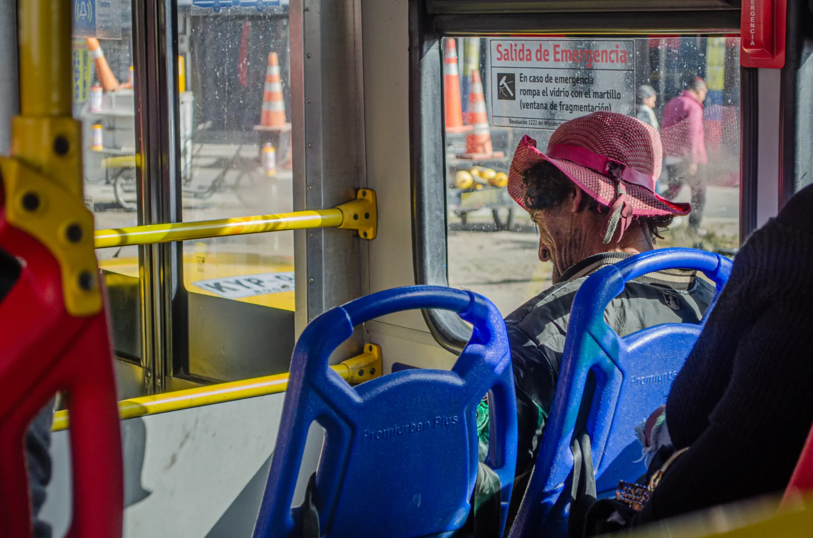
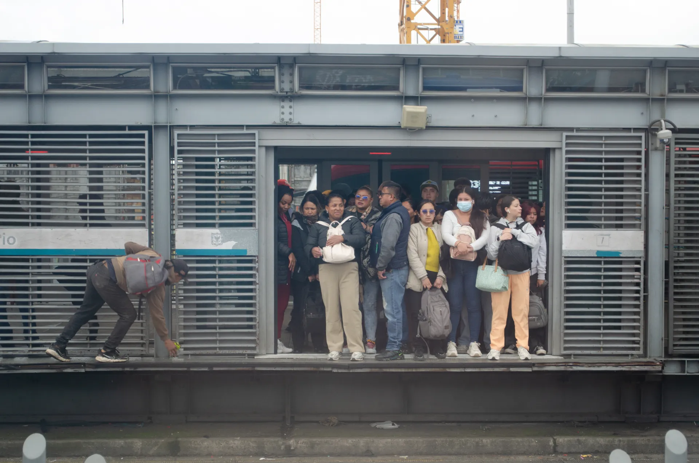
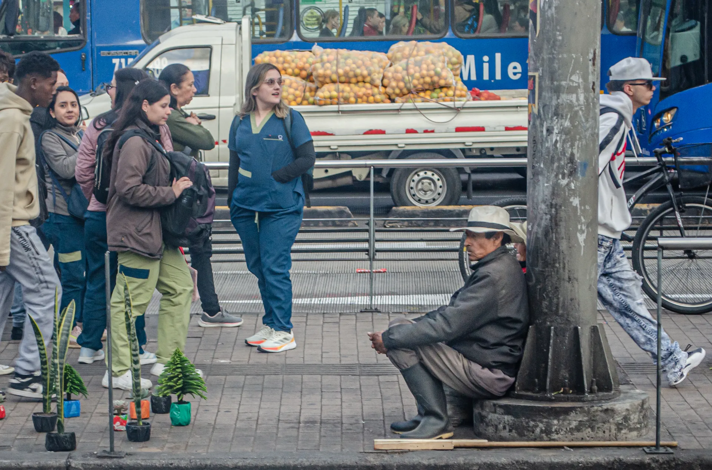

Justo ahora que llevaba casi 8 años trabajando en algo totalmente distinto, que paso 5 horas en el transporte público, casi 9 horas de trabajo, llegar a la casa y alistar todo lo del día siguiente de trabajo, para el día de descanso, alistar todo lo de la semana. Y de pronto lograr sacar unas famélicas horas para algún hobby, a la familia, la pareja, alguna otra actividad. Y quien quiere tomar fotos en situaciones nuevas, lugares distintos, espacios especiales, de modelos y así otro sinfín de cosas, pues ni el presupuesto ni el tiempo nos dan para experimentar, se me hizo necesario buscar una válvula de escape.

Y con esto en mente tomé una decisión que es, cuanto menos, irrespetuosa a lo que consideran ortodoxo, y es atestiguar a través del sitio donde no puedo ser "productivo", donde estoy obligado contra mi voluntad, donde no tengo elección: el momento del transporte. Los que son fotógrafos saben que es una pesadilla técnica el fotografiar dentro de un vehículo en movimiento, las condiciones de luz, la velocidad de la captura, la composición, la estabilidad de la cámara, las condiciones de Bogotá, el estado del asfalto. Es lo que pasa a través de mis ojos, lo que vivo todos los días, en lo que millones de personas estamos atrapados. Es tan natural como sociedad, tan deshumanizante en cómo ponemos nuestros cerebros en pausa, cómo lo experimentamos y cómo yo me siento en esta pecera.

Nuestro único camino es aceptar el languidecer entre calles, semáforos, atascos y vendedores ambulantes. Pues la forma encuentra sus métodos, los métodos podrían dar salida: si no es física, que sea mental. Sufro cuando veo mis fotos en una pantalla, creo que les hace falta más definición, que me equivoqué en la composición, que me ubiqué mal, que está movida... en fin, una cantidad de decisiones mal ejecutadas me estaban volviendo loco, y esto fue lo que me hizo abrazar la idea de "buscar la imperfección", que cualquier resultado es algo así como auténtico, espontáneo, pero que a su vez es exigente técnicamente casi como ningún otro. Es una ruleta. No sé qué me depara cada metro recorrido y el pobre ángulo que me da la ventanilla del transporte público. Y esto es aún más emocionante: el estar atento.




